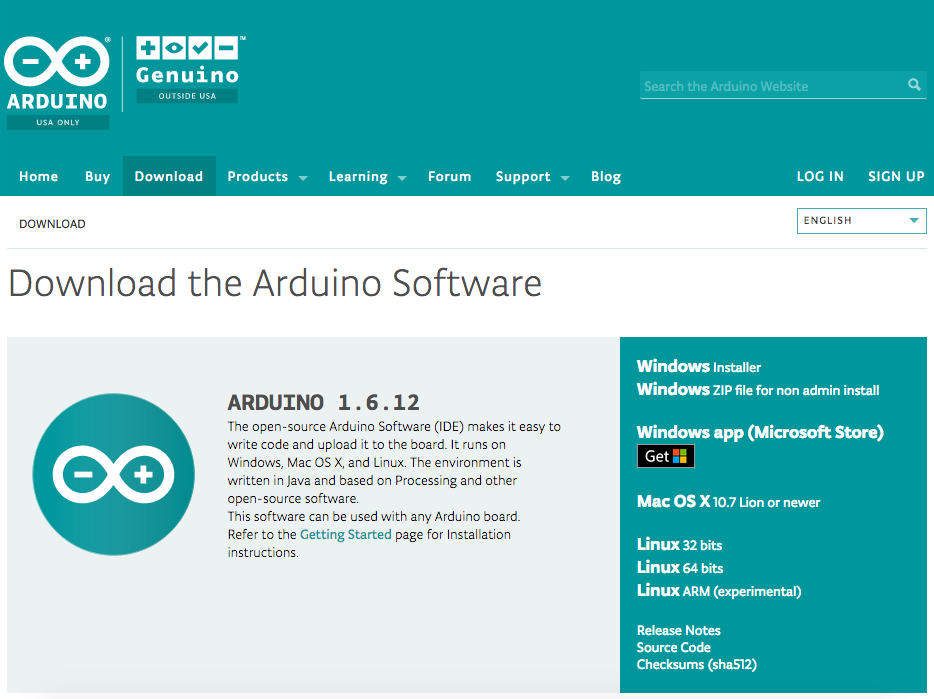
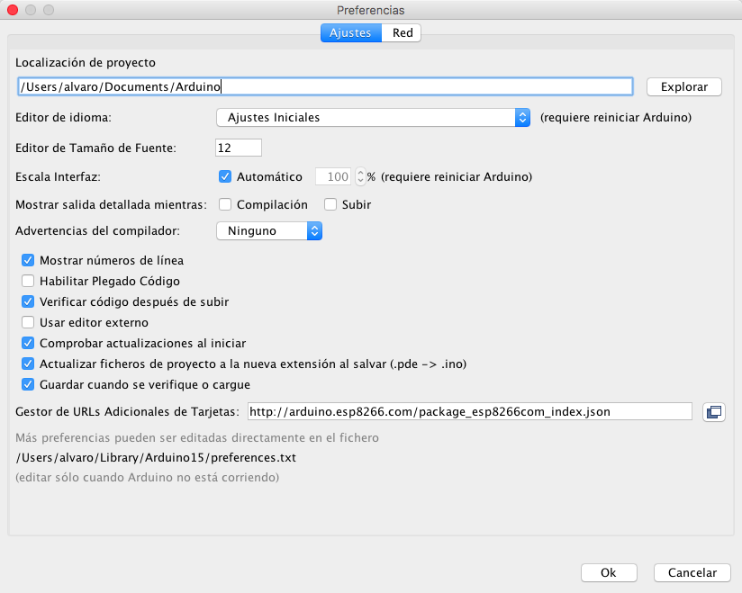
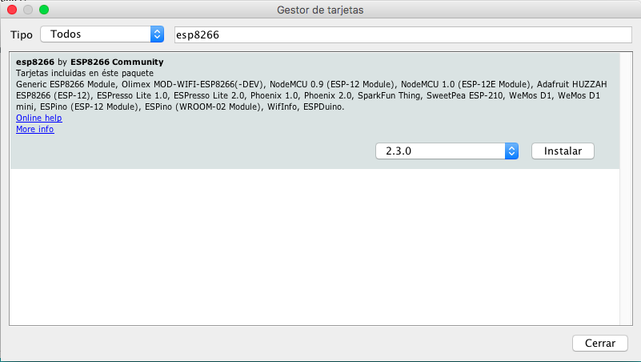

En esta sección del reposititorio se explica los pasos que se han de seguir para la configuración del entorno de desarrollo. Un entorno de desarrollo (IDE) es un conjunto de herramientas que facilitan la tarea de programar y depurar el código que se implementa. En nuestro caso, utilizaremos el entorno de desarrollo de Arduino.
Antes de proceder a la instalación es conveniente tener instalar los driver de la placa para su reconocimiento por parte del sistema operativo. Los drivers no tiene el nombre de chip principal de la placa ESP8266, sino el chip que permite la conmunicación de este chip con el ordenador por USB que es CH340. En los siguientes enlaces es posible descargase los drivers para los principales sistemas operativos:
Como se ha comentado anteriormente se utilizará el entorno de desarrollo de Arduino al cual se le instalará una serie de "plugins" que permitirá el desarrollo de las placas basadas en el chip ESP8266. Dicho entorno se puede descargar desde la siguiente página web:
En la sección "Download" podremos encontrar las diferentes versiones para cada sistema operativo.
Windows aparecen 3 versiones:
Mac OS X hay una única versión:
Linux aparecen 3 versiones:
Una vez abierto el entorno deberemos de navegar en el menu superior izquierda a:
No aparecerá la siguiente ventana en la que deberemos de incluir la siguiente URI en el campo "Gestor de URLs Adicionales de Tarjetas:"
http://arduino.esp8266.com/stable/package_esp8266com_index.json
Esto permitirá al entorno el acceso de un repositorio con librerias y configuraciones de las placas que hacen uso del chip ESP8266.
Una vez indicado el repositorio deberemos de navegar de nuevo el menu superior derecha a:
Nos aparecerá una ventana como la siguiente:
En ella deberemos de pulsar en el campo superior derecha del buscador y escribir:
ESP8266
Nos aparecerá un único resultado que deberemos de instalar.
Una vez instalado el plugin para la placas basadas en el chip ESP8266, deberemos de indicar al entorno que hacemos uso de esta placa. Con la placa NodeMCU conectada por usb en el ordenador deberemos de ir al menu superior izquierda y hacer seleccionar las siguiente configuraciones: